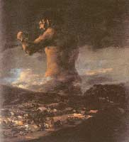

Da Origem ao Iraque – a
Inexorável Agressividade
Não poderia deixar de agradecer o estimulante desafio colocado pela Faculdade de
Filosofia de Braga, por intermédio do Dr. João Carlos Major, propondo

A) Algumas noções de antropologia
Uma das pinturas que mais impressiona o autor destas linhas é “O Colosso”, de Goya. Aí, brilhantemente, o artista expressa o pânico (aliás, sub-título do quadro) que a população aterrada manifesta perante aquele ser fantasmagórico, omnipotente, hostil, que emerge por entre nuvens ameaçadoras e que tingem o circunmundo humano de uma tonalidade escura, amedrontadora, perante a qual o impotente Sapiens Sapiens é impelido a fugir. Nesse quadro, identificamo-nos projectivamente com os sentimentos da população em fuga, mas também com os maus instintos do musculado monstro, que sabemos habitarem em cada um de nós. Identificamo-nos com os medos e as angústias dos humanos, mas também com a cólera e as motivações do agressor. Sentimos que aquele monstro pode ser algo de transcendental (no sentido de divino e superior ao Homem), mas também condição essencial do próprio Homem e, como tal, também não dominado por ele. Nesse quadro, Goya cria uma figura majestosa na sua força indomável, que antevemos predisposta a aplicar o indispensável castigo (correctivo?) à multidão humana. Por entre essa fuga desordenada emana, como herança determinista, o instinto de sobrevivência que empurra as gentes para longe daquele horror inimaginável, quem sabe se, simbolicamente, para longe de si própria. Este monstro poderia representar a guerra ou a luta implacável com que o Homem, através dos tempos, se vai digladiando implacavelmente. Apesar disso, uma das fantasias mais persistentes da imaginação do Homem, como sublinha A. Storr, com quem não podemos deixar de estar inteiramente de acordo, é a ideia de que em algum momento houve ou haverá uma época de perfeita paz e sem qualquer tipo de manifestação agressiva. A persistência desta utopia deve-se ao facto de a segurança ser uma necessidade psíquica universal, a par de outras como a necessidade de uma resposta afectiva vinda do outro (o sujeito conforma-se aos desígnios da sociedade por medo do castigo mas também pela necessidade de aprovação), e a necessidade de novidade experiencial, equivalente ao reflexo explorador do animal de Pavlov. Todas as mentes esclarecidas concordarão, todavia, que o problema da agressividade, da violência, da maldade, é anterior à existência do Homo Sapiens Sapiens (surgido há 40.000-50.000 anos) e radica nos seus antecessores na escala filogenética. Não tem sentido a ideia de que o “Bom Selvagem” era um ser pacífico, bondoso, tolerante, como afirmava J. J. Rousseau, para quem o homem é pacífico e bom no seu estado primitivo e só a civilização o corrompe e torna agressivo. Pensamos que o estudo da evolução filogenética do Homem nos pode proporcionar uma perspectiva muito mais apurada, não só do que é o ser humano, como também do que não poderia deixar de ser. No Homem culmina uma evolução filogenética consubstanciada na lei de Haeckel: “A ontogénese constitui uma recapitulação abreviada da filogénese”, ou seja, uma dada espécie desenvolve-se porque na sua formação se reconstituem produtos (embriões) que, evoluindo, vão dar origem a uma espécie diferente e mais diferenciada. A problemática da agressividade do ser humano tem de ser analisada como um fenómeno indissociável da natural evolução das espécies. Na verdade, a agressividade e a violência, que de modo nenhum são equivalentes, existem desde o princípio da vida, sendo bem mais antigas que a nossa própria espécie e fundamentais à auto-conservação, a qual exige que o animal tenha dentro de si o potencial para a acção agressiva. Como sublinha Lorenz, a guerra está omnipresente na natureza e a agressividade é mesmo muito anterior, na escala filogenética, ao vínculo pessoal, o qual só aparece no período mesozóico tardio com os teleósteos. Lorenz escreve: “Vimos surgir os primeiros vestígios de relações pessoais nos ciclídeos machos de Gafsa... examinando os modos de vida, dos mais simples aos mais evoluídos, vemos aparecer pela primeira vez a formação de grupos nos teleósteos, mais precisamente nos acantopterígeos, e sobretudo nos ciclídeos e seus parentes próximos como os peixes anjo, os peixes-borboleta e as castanhetas”. Quanto ao vínculo maternal, este apenas se esboça no mais evoluído dos répteis, o crocodilo. Quando sente o perigo aproximar-se, o crocodilo esconde as crias na boca, o que se pode interpretar como um tipo de reacção maternal. Nenhum outro animal anterior ao crocodilo na escala filogenética é capaz de ter esta atitude. Já na escala filogenética superior aos répteis, ou seja, nas aves, se encontra muito difundido este instinto maternal sem o qual as espécies não sobreviveriam. Há portanto, na evolução filogenética, agressividade e violência intraespecífica sem o seu contrário, o amor, mas não há amor sem agressividade e violência. Esta agressividade intraespecífica teria a vantagem, explicitada por Darwin, de permitir seleccionar os indivíduos mais fortes e melhor adaptados à sobrevivência, assim como obrigar os animais a ocupar o espaço vital disponível e distribuirem-se pelo território. Os sobreviventes seriam, evidentemente, os responsáveis pelo património genético das gerações seguintes. O antepassado comum de todos os hominóides (símios e hominídeos) terá surgido há 30 milhões de anos, pensando-se que há cerca de 12 milhões de anos se encontravam individualizados três géneros de hominóides: o Dryopithecus, precursor dos símios; o Gigantopithecus que deu origem a antropóides já extintos; e o Ramapithecus, cuja existência parece datar de há 15 milhões de anos, e que foi o iniciador da família dos hominídeos, e que era um animal com cerca de um metro de estatura e 150 cc de volume encefálico. O Ramapithecus diversificou-se em várias linhas evolutivas (que compreendem os Australopithecus com 400-530 cc de volume encefálico). O progressivo desenvolvimento cerebral permitiu que surgissem hominídeos cada vez mais complexos. Há 2 milhões de anos surgiria o Homo Habilis com 1,20 m e um volume encefálico de 650-700 cc - com este hominídeo foi então possível o aparecimento da linguagem verbal (a função expressiva ou sintomática da linguagem, assim como a função de transmissão ou sinalização eram já possíveis aos animais. O que lhes estava e continua vedado são as funções descritiva e argumentativa, exclusivas dos humanos). 1) Função expressiva - o animal exprime os seus estados emocionais da mesma forma como o fazem os seres humanos com gritos, riso, etc. 2) Função de transmissão ou de sinalização - o emissor procura provocar alguma reacção no receptor, como o pássaro que tenta alertar o bando para um perigo. 3) Função descritiva - constitui a maior parte da comunicação humana. Descrevemos as nossas experiências aos outros: a viagem ou a compra que fizemos, etc. Contém intrinsecamente a possibilidade da mentira. 4) Função argumentativa - está intimamente ligada à capacidade de pensar racionalmente e representa a linguagem no seu nível mais elevado. Foi certamente a última a desenvolver-se.
Com o Homo Habilis (de hábil, devido ao fabrico de objectos em pedra por eles iniciado), começa, há cerca de 1-1,5 milhões de anos, o fabrico e não apenas o uso de utensílios e, desde então, o homem jamais deixou de se especializar na fabricação de armas de guerra. A mão dos hominídeos (como a dos antropóides), intimamente coordenada com o seu olhar penetrante - grande capacidade discriminativa, extenso espectro cromático, percepção em profundidade - torna-se veículo de transformação do mundo exterior. Todo este desenvolvimento foi possibilitado pela expansão do cérebro do H. Habilis, a qual, segundo Tobias e Holloway, não terá sido uniforme. Deu-se um desenvolvimento posterior do lobo frontal inferior na área de Broca mas, mais assinalável, foi a amplitude arredondada do lobo parietal inferior, correspondente a parte da importante área da fala de Wernicke. Deu-se ainda um desenvolvimento posterior do lobo parietal superior. Foi devido a esta evolução cerebral que Tobias pensa ter sido o Homo Habilis o iniciador da linguagem verbal (não nos devemos todavia esquecer das importantes modificações sofridas pelo aparelho fonador e que permitem ao homem falar) embora Eccles pense que os australopitecíneos já teriam acesso à linguagem descritiva. Graças à evolução atrás explicitada foi possível ao hominídeo que se seguiu na escala evolutiva, o Homo Erectus, usar o fogo e empreender a primeira migração hominídea. O Homo Erectus usou o biface durante a sua conquista e expansão pelo mundo (biface que era uma arma com 40 cm de aresta cortante por quilograma de sílex, bem mais perigosa e evoluída que a pedra lascada do H. Habilis com 10 cm de aresta utilizável) e, como atrás se referiu, porque possuía já a linguagem verbal, tinha uma capacidade de cooperação e transmissão de conhecimentos cada vez maior, o que lhe permitia caçar animais de grande porte como cavalos, bisontes, etc. Porque descobriu a utilização do fogo, foi-lhe possível aquecer-se e cozinhar os alimentos, muito menos duros do que crus - os dentes caninos e molares tornaram-se menos necessários, entraram em involução - veja-se o que aconteceu com o(s) dente(s) do siso, os quais deixaram de aparecer em inúmeras pessoas. O Homo Sapiens, o último elo evolutivo da cadeia animal, terá surgido há cerca de 100 mil anos. Duas subespécies surgiram a partir do Homo Sapiens: o Homo Sapiens Neanderthalensis, cuja abóbada craneana revelava uma testa baixa com um hipodesenvolvimento frontal e o Homo Sapiens Sapiens. O Homo de Neanderthal terá sido o primeiro hominídeo a praticar ritos e cerimónias fúnebres. A evolução cerebral, ao permitir o acesso a níveis cognitivos muito mais sofisticados, vai conduzir o homem a equacionar a problemática do transcendente, do futuro, da morte e da vida para além da morte, estando esta capacidade reflexiva e a crença no divino na origem de inúmeros sacrifícios humanos. Em épocas remotas esta era uma causa importante de homicídio pois, como escreve Gaston Bouthoul: “Quanto mais temível era o Deus, mais célebre era o seu santuário e mais sangue aí corria em abundância...”. Em 1868, no Sudoeste de França, num grande abrigo rochoso conhecido por Gruta de Cro-Magnon (grande buraco, no dialecto local) foram descobertos fósseis de cinco indivíduos esqueleticamente idênticos ao homem actual. Daí que o Homo Sapiens Sapiens seja frequentemente identificado como o “Homem de Cro-Magnon”. Com um volume encefálico de 1400 cc, um lobo frontal mais desenvolvido, um pregueamento cerebral e uma organização sináptica dos neurónios mais evoluída, o Homo Sapiens Sapiens estava apto a empreender uma escalada progressiva de desenvolvimento científico e tecnológico que, muito naturalmente, se repercutiu também na capacidade de se exterminar em quantidades cada vez mais maciças.
B) Evolução da Agressividade através dos tempos
Seria dificilmente compreensível que a natureza criasse toda uma cadeia de seres possuídos de potencial agressivo e que o homem primitivo nascesse bom e apenas a sociedade o corrompesse. Nos outros animais a agressão visa bem mais à preservação da espécie que à destruição, na linha, aliás, do pensamento de Darwin e Wallace para quem a estrutura e o funcionamento do cérebro são dirigidos pelo princípio da sobrevivência do indivíduo e da espécie (Darwin chamou a este processo, selecção natural). E se a luta entre os animais da mesma espécie é determinada essencialmente por questões territoriais, por questões de ordem sexual, por questões alimentares básicas ou de defesa da prole, no Homem, a problemática da agressividade é ainda agravada, como sublinha L. Von Bertalanffy, por fenómenos extremamente perniciosos como a capacidade de criar universos simbólicos no pensamento, na linguagem e no comportamento. Porque se esta capacidade de simbolização alarga desmesuradamente a faixa dos interesses vitais do homem, aumenta-lhe também a vulnerabilidade ao ressentimento, ao ódio, à vingança, que a capacidade de memorização se encarregará de perpetuar no tempo. No tempo dos protagonistas e, também, no tempo dos outros. Um outro aspecto importante reside no facto de, entre os animais, a luta servir para o agente defender os seus interesses, não sendo valorizada em si mesma, ao contrário do que acontece com o Homem, em que a glorificação da agressividade está e sempre esteve espalhada em todo o mundo. A convicção do general Sherman, citado por Lorenz, de que a guerra é o inferno e toda a glória são patranhas, pouco sentido faria para os Waikas, índios muito agressivos e que cortam o cabelo de modo a exibirem as cicatrizes (à semelhança de algumas zonas da Prússia em que ganhar cicatrizes na cara é motivo de orgulho), para Alexandre, o Grande, ou para Napoleão, cuja sede de glória exigiu o sacrifício de uma geração de franceses. Parece-nos sem sentido a noção de que o Homem foi em algum momento da sua história um ser pacífico. Mário Taborda assinala que “o crime vem da noite dos tempos, brotando mesmo de uma raiz bíblica” e Pinto da Costa defende que “nos primórdios da humanidade o delito era um acontecimento natural, posteriormente transformado em fenómeno social e, por fim, jurídico, sem contudo perder o seu carácter fundamental de facto biológico”. Autores como Dart e Roger demonstraram que já os Australopitecus se feriam no crâneo com muita frequência. Dart não deixa de chamar a atenção para o facto de os esqueletos macho conterem mais feridas que os das fêmeas e de os esqueletos aparecerem, sobretudo nos machos, mais feridos do lado esquerdo que do lado direito por causa de os seus antagonistas serem dextros. Von Koenigswald encontrou em Trinil, Sangiran (Java, 1937), um exemplar de Pitecantropus Erectus que mostrava evidência de lesão craneana produzida com grande força e, como não podia deixar de acontecer, os Homo Sapiens (Neanderthal) continuaram a manter este comportamento agressivo intraespecífico. Trinkaus e Zimmerman apontam um homem Neanderthal apunhalado frontalmente no tronco por um antagonista dextro como a vítima mais precocemente conhecida das armas humanas e Openoorth elucida que os Neanderthal praticaram antropofagia generalizada, com especial predilecção pelo cérebro (o conjunto antropofágico neanderthalensis mais interessante seria o de Krapina, que existe no museu de Zagreb). Esta agressividade intraespecífica ir-se-ia manter no Homo Sapiens Sapiens - o antropólogo Paul Tacon descobriu em 28 de Junho de 1994, na região australiana de Arnhem Land, a mais antiga (10.000 anos) pintura rupestre representando um conflito bélico. Bracinha Vieira é peremptório na afirmação de que não se conhece nenhum grupo étnico destituído de agressividade. E várias eram as razões que levavam o primitivo Sapiens Sapiens a ser mais violento que o homem moderno: o homem primitivo não tinha a disponibilidade de alimentos que tem o homem actual e, consequentemente, a luta pela sobrevivência era incomparavelmente mais dura; daí que inúmeras tribos primitivas recorressem ao roubo de alimentos e ao canibalismo como meio de sobrevivência. Grapin salienta que o Homem é o único primata capaz de devorar os seus semelhantes (foram observados dois ou três casos de canibalismo entre os chimpanzés mas esta raríssima excepção só se verifica em condições anormais de nutrição). Os exemplos de antropofagia abundam entre os humanos - um dos mais famosos guerreiros, Átila, rei dos Hunos, tinha por costume comer carne humana e beber no crâneo dos seus inimigos, hábito que está na origem do brinde nórdico “skol”. Mas o canibalismo também podia ser um ritual religioso. Joseph de Acosta relata que em certa ocasião, a propósito de uma festa religiosa mexicana, se chegaram a sacrificar mais de 20.000 prisioneiros, cujos corações se colocaram num gigantesco vaso de cerâmica em Texococo para serem brindados aos deuses enquanto o povo se entregava a um festim com os corpos das vítimas, convencidos de que algumas propriedades boas dos inimigos passariam para eles. Alvar Nunez, nos seus “Naufrágios” (1542), ao contar os costumes dos índios da Flórida diz que “quando morre alguém enterram-no. Mas se fôr um fisico (médico) queimam-no e fazem polvo (pó) dos ossos; e, passado um ano, quando “se fazen sus honras... aos parentes dão aqueles polvos a beber, dos ossos em água”. Os italones filipinos, afirma Frazer, bebem o sangue das suas vítimas e comem a parte posterior do crâneo para adquirir o seu valor enquanto os dayaks de Bornéu ingeriam as palmas das mãos e a carne dos joelhos das vítimas para fortalecer as suas próprias mãos e joelhos. Um outro factor que contribuía para uma acrescida agressividade era o facto de as tribos serem maioritariamente poligâmicas (poligamia masculina, essencialmente) sendo frequentíssimo o rapto de mulheres de tribos vizinhas (no seio da própria tribo, como sublinha Lowie, uma das mais altas autoridades antropológicas dos E.U.A., “as leis não escritas de uso consuetudinário costumam ser cumpridas com maior diligência do que as dos nossos códigos escritos. Melhor dizendo, são obedecidas espontaneamente”), o que implicava a matança dos respectivos maridos e filhos. A mortalidade infantil era elevadíssima (em muitas tribos as crianças não saudáveis eram, como em Esparta, abatidas pouco após o nascimento) e os vínculos interpessoais eram bem mais precários que actualmente porque a esperança média de vida das pessoas era muito baixa. As invejas, as crenças e os mitos nos poderes transcendentes e maléficos dos vizinhos eram generalizados, estendendo-se estas crenças também às virtudes guerreiras, como anteriormente foi assinalado. O respeito pelo outro e pelos seus direitos era uma prática sobretudo intratribal (o que não significa que os homicídios entre pessoas da mesma tribo não fossem frequentes) sendo o estranho à tribo encarado como um inimigo que se poderia abater sem parcimónia. Todavia, e apesar de todas estas aparentes evidências, poder-se-á manter a pergunta: mas que dados possuímos para afirmar que o Homo Sapiens Sapiens, surgido há cerca de 40.000 anos e por muitos referenciado como “Bom Selvagem”, era um ser tão ou mais agressivo quanto o é hoje? O estudo das comunidades primitivas permite-nos ter uma ideia relativamente rigorosa da(s) atitude(s) prevalecente(s) entre os nossos ancestrais relativamente à agressividade. E todos esses estudos confirmam que o primitivismo facilita a desumanização do outro (pese o facto de um ou outro autor como Helmuth enfatizar a opinião contrária). Quanto mais primitivo é um grupo étnico, mais directos e espontâneos são os seus actos de aceitação ou rejeição para com alguém. Os índios Mundurucu do Brasil, por exemplo, dividem o mundo em duas partes: “eu próprio” e “pariwat - tudo o resto”. Todos os seres humanos que pertençam a esta última categoria são considerados como peças de caça e fala-se deles como de animais. Esta desumanização e animalização do outro impõe, de acordo com cada grupo étnico, diferentes medidas cautelares de modo a que não surja a identificação e compaixão (inata no homem) com o outro - os caçadores de cabeças das Molucas só podiam matar os seus adversáros pelas costas. Se o agressor via o rosto da presa humana e depois a matava era considerado homicida. Os papuas da Nova Guiné não podiam matar aquele com quem tivessem comido. Em muitas tribos polinésias era lícito matar as crianças desde que estas ainda não tivessem sido amamentadas pela mãe. A partir desta altura era considerado homicídio. É verdade que em certas comunidades primitivas se observava uma conspiração contra a agressão sendo as crianças educadas para a contornar. Todavia, alguns dos povos ditos dóceis apresentam um índice de homicídio surpreendente. Um exemplo típico é o dos Kalahari San, um povo do deserto Kalahari referenciado como dócil e que apresenta, segundo Richard Lee, e num período de 50 anos, um total de 22 homicídios, o que dá 293 homicídios por milhão, ou seja, quase vinte vezes superior à taxa de homicídio habitualmente considerada em Portugal. Malinowski estudou uma comunidade primitiva em Trobriand, na Melanésia australiana e afirma que “...O assassinato é um evento extremamente raro. Na realidade, fora do caso que acabo de descrever (um indivíduo matara o irmão com uma lança), só ocorreu outro durante a minha permanência em Trobriand: a morte, por lança, de um feiticeiro notório... Em todos os casos em que um homem é assassinado por gente de outro sub-clã, existe a obrigação da pena de Talião. Se bem que em teoria isto seja absoluto, na prática só se encontra como obrigatório no caso de um adulto masculino de certa categoria ou importância...” - embora Malinowski refira ser pouco frequente o homicídio nesta população, estamos convencidos de que a taxa de homicídio da população estudada pelo autor seria bem maior que a nossa taxa do mundo ocidental. Para termos a certeza do que acabamos de afirmar necessitariamos de saber o quantitativo populacional e o tempo exacto que o autor permaneceu junto desta tribo, o que nos foi impossível apurar. No entanto, e se por hipótese o sub-clã primitivo estudado possuísse 2.000 indivíduos, e o autor aí tivesse permanecido dois anos, a taxa anual média seria de 50 homicídios por 100.000 habitantes/ano, ou seja, 4-5 vezes superior à taxa de homicídio actual dos E.U.A. e cerca de 30 vezes superior à taxa de homicídio portuguesa. São, porém, inúmeros os povos primitivos que apresentam um comportamento agressivo absolutamente brutal registando os antropólogos a existência de poucos povos sem comportamento agressivo e guerreiro. Knauft estima que o homicídio era responsável por 35% da mortalidade dos homens e 29% das mulheres entre os Gebusi da Nova Guiné, e entre alguns horticulturalistas da Amazónia a proporção seria ainda maior. Os Kurelu, também da Nova Guiné, viviam na idade da pedra até 1954, altura em que o primeiro branco com eles contactou. O seu modus vivendi era de permanente guerra entre si e os líderes eram especialmente respeitados. Um homem sem valor era Kepu - um homem indigno, um homem que não matou. Poucos Kepu tinham mais de uma mulher e muitos não tinham nenhuma. Entre os Yanomani da Venezuela a sociedade era acéfala, pobremente hierarquizada e desprovida de instituições de autoridade, sendo a violência um modo institucionalizado de controle social destinado a fazer respeitar o direito. Entre os Yakuts os filhos do assassinado vingavam-se nos familiares do assassino até à nona geração e entre algumas tribos de índios dos actuais E.U.A. eram frequentes os ataques a tribos vizinhas à procura de mulheres. Um dos investigadores mais conhecido pelo seu estudo dos povos primitivos é Margaret Mead. Esta autora estudou três tribos da Nova Guiné publicando em 1935 o livro “Sexo e Temperamento”. Tentando demonstrar que as diferenças entre os traços de carácter de homens e mulheres são arbitrárias e culturalmente reversíveis, Mead descreveu essas tribos como os gentis Arapesh, os violentos e canibais Mundugumor e os “sexualmente revertidos” (sex reverted) Tschambuli. Independentemente de etnógrafos como Reo Fortune (1939), Donald Tuzin (1977, 1980) e Derek Freeman (1983), citados por Wilson e Daly, demonstrarem que os trabalhos de Margaret Mead são uma mistificação, deve salientar-se que em todas estas tribos primitivas a guerra era um monopólio masculino e amplamente generalizado. Os ditos gentis e passivos Arapesh impunham a obrigação aos jovens rapazes de matar alguém de uma tribo próxima como forma de poderem ter acesso a um verdadeiro estatuto de homem (os desejos de poder, prestígio, posse, que Karen Horney designa de neuróticos, de modo nenhum são exclusivos do homem moderno) . Quanto aos homens Mundugumor eram ávidos poligâmicos que empreendiam frequentes investidas às tribos vizinhas à procura de mulheres e de cabeças (masculinas, naturalmente). Mead explicita que o menino Mundugomor nasce num mundo hostil onde a maioria dos outros rapazes serão seus inimigos, dado que a organização social Mundugumor se baseia na teoria de que existe uma hostilidade natural entre todos os membros do mesmo sexo. Um jovem rapaz desta tribo tinha também de cometer um homicídio para poder ser considerado um homem, com todos os privilégios que esse estatuto conferia aos mancebos, nomeadamente em termos do acesso aos favores femininos. E como nenhum se satisfaria com o desprezo dos companheiros ou se bastaria sem mulheres, facilmente se deduz que todos rivalizariam por serem os melhores lutadores e obterem as melhores cabeças. Finalmente, os sexualmente revertidos Tschambuli apresentavam também um longo historial guerreiro e eram responsáveis pela total aniquilação de algumas tribos vizinhas. Como em todas as sociedades tribais, a guerra era um monopólio masculino e, à semelhança das tribos precedentes, matar o primeiro inimigo era um marco importante na vida de qualquer jovem rapaz. Badinter explicita não haver qualquer necessidade de correr o mundo para constatar a multiplicidade do modelo masculino (as mulheres revelariam uma menor diferença entre si). É curioso todavia verificar que esta diversidade (que ainda persiste apesar da rápida ocidentalização do mundo) não impede que o homicídio seja protagonizado essencialmente por homens. Mas se o homicídio era um fenómeno mais frequente entre tribos primitivas como seria, nomeadamente no mundo ocidental, em épocas e séculos mais recentes? A propensão do homem ocidental para eliminar qualquer elemento estranho a uma pequena comunidade foi desaparecendo progressivamente. Mas não há tanto tempo quanto se possa pensar. Entre nós, por exemplo, ainda há bem poucos séculos, o foral de Covelinas, de 1195, concedia aos moradores a permissão de matar qualquer indivíduo que entrasse na vila “para lhes fazer mal” desde que pagassem de multa uma galinha - percebe-se como seria difícil avaliar devidamente a intenção de um estranho, e como seria muito fácil justificar, à posteriori, as más intenções do intruso já falecido. Devido a necessidades de povoamento e defesa do território, aos homicidas e outros criminosos eram oferecidas, sobretudo nas regiões fronteiriças, benesses actualmente impensáveis. No foral de Bragança de 1187 estabelecia-se: “Se o morador da vossa Villa matar o outro que nom for de vossa Villa, nom peyte por el ne migalla: e se matar o de fora ao da vossa Villa, peyte por el CCC ssoldos” e no foral de Pena-Ruiva se determinava que “Todos os que estiverem culpados de algum ilicito como servidão quebrada, homicídio, estupro, venham para esta vila e fiquem seguros e livres”. Sabugal, em 1369, pedia que fossem dadas mais garantias aos refugiados nesse couto enquanto Monforte de Rio-Livre requeria que fôsse ali estabelecido couto de homiziados, o que o monarca concedeu em 1420, permitindo que ali se acolhessem até 50 foragidos, “não sendo de aleive ou traição”. A vingança privada, atitude bem mais antiga do que o recente “hábito” de dirimir os conflitos no tribunal e que assentava na regra de talião, “olho por olho, dente por dente”, estava generalizada e era exercida com brutalidade; os direitos de poder absoluto do Pater famílias, hoje postos em causa, permitiam todo o tipo de abusos e de arbitrariedades; os caminhos e as ruas tinham à espera dos viajantes hordas de assaltantes e bandidos; a incipiência da medicina e a inexistência de higiene possibilitavam que feridas hoje triviais degenerassem em precoce mortalidade. Até à Idade Média a vida era extraordinariamente violenta o que levou Chesnais a escrever que “poucos humanos atingem a idade adulta no séc. XIII sem estarem de algum modo misturados com a problemática do homicídio”. O estudo estatístico permite ter uma ideia mais rigorosa da evolução do homicídio. Porém, são raros os países em que se fez uma análise sistemática da violência. A Inglaterra é uma das raras nações, senão a única, em que existem dados sobre a evolução do homicídio, nomeadamente desde a Idade Média. Em Oxford, a taxa de homicídio do séc. XIII oscilava entre 35-70/100.000 hab., ou seja, 4-7 vezes mais elevada que as metrópoles americanas de hoje. Na zona rural de Warwick a taxa de homicídio era de 47/100.000 hab., ou seja, 47 vezes maior que actualmente. Com a formação dos Estados vai iniciar-se uma lenta domesticação da aristocracia (ao contrário de hoje, as élites eram élites guerreiras e não tecnocráticas) e um vagaroso movimento de recuo da violência que se estenderá progressivamente a todas as camadas sociais. Violência que se manifestava igualmente na aplicação das penas - até ao fim do séc.XVIII a tortura era corrente em todos os países ocidentais sendo a execução capital precedida dos suplícios mais horríveis. Em Inglaterra, para uma população pouco superior a 10 milhões de pessoas ocorreram em 1830, 1351 condenações à morte. Então, como habitualmente, eram sobretudo as classes baixas as mais atingidas - a maioria dos condenados à morte era gente muito pobre, sem instrução, sem emprego, sem domicílio fixo, pertencendo inúmeros dos executados à classe dos vagabundos e mendigos (encontrando-se entre estes, seguramente, muitos doentes mentais). O indivíduo, enquanto tal, com a sua identidade e os seus próprios direitos, Em Inglaterra, para uma população pouco superior a 10 milhões de pessoas ocorreram em 1830, 1351 condenações à morte. Então, como habitualmente, eram sobretudo as classes baixas as mais atingidas - a maioria dos condenados à morte era gente muito pobre, sem instrução, sem emprego, sem domicílio fixo, pertencendo inúmeros dos executados à classe dos vagabundos e mendigos (encontrando-se entre estes, seguramente, muitos doentes mentais). O indivíduo, enquanto tal, com a sua identidade e os seus próprios direitos, aparece na história da humanidade apenas há dois séculos, tendo pouco mais de século e meio a primeira abolição da pena de morte. Os primeiros países a abolirem a pena de morte foram a Finlândia (1826), Holanda (1850), Bélgica (1863) e Portugal (1867). A violência recua significativamente quando o Estado moderno expande os seus tentáculos (polícia, exército, tribunais, etc.) - ao substituir o estado natural, o Estado vai alterar comportamentos. A melhoria das vias de comunicação, ao permitir o mais fácil acesso da autoridade do Estado a todo e qualquer lugar, veio condicionar comportamentos e permitir uma liberdade e segurança que de outro modo seriam impossíveis - no final do séc. XIX e princípios deste século, em certas regiões de Portugal, nomeadamente para lá do Marão, era ainda perigosíssimo circular pois abundavam os bandidos e os assaltantes favorecidos pelas particularidades do terreno. As sociedades tradicionais, onde a autoridade do Estado não está ainda afirmada, e a civilização agrária, aceitam muito mais facilmente o acto vingativo do que a civilização industrial (que vai encarar a vingança como assassínio e crime a punir). Daí que nessas sociedades a vingança privada permanecesse a regra e as taxas de homicídio de 20-40/100.000 hab. não fossem raras - a Córsega, onde em 1852 se verificou uma taxa de homicídio de 60/100.000 hab., é uma das regiões paradigmáticas a este propósito dado que aí a vingança é um acto de honra, de dever sagrado a cumprir pela família ou pelo clã e onde, consequentemente, o fenómeno homicida tem uma gravidade muito maior. Na Inglaterra o assassínio é bem menos frequente que no Continente desde o fim do século XVII. Segundo Radzinowicz, citado por Chesnais, esta regressão da taxa de homicídio ter-se-ia ficado a dever, mais do que ao medo da punição, ao horror da violência cultivado pela cultura bíblica (a bíblia era o livro geral da nação), ao progresso da alfabetização e ao desenvolvimento económico-cultural - quanto mais alto é o nível de desenvolvimento sócio-económico mais a violência é baixa e, inversamente, quanto mais baixo for o nível sócio-económico mais alta é a violência. Algo de semelhante se passou na Suécia onde no fim do século XIX ocorriam somente 15 homicídios por milhão de habitantes. Em Itália, entre 1850-1880, o número de pessoas assassinadas foi de 67.680 correspondendo a uma taxa de 13/100.000 habitantes e em 1890, com a expansão da hidra estatal, a taxa tinha caído para 2/100.000 habitantes. Na Itália, o sul rural e pouco desenvolvido, com um sistema de valores tradicional, familiar e comunitário, tem uma taxa de homicídio bem maior que o norte desenvolvido e industrial, apesar das fortes migrações em Itália, de sul para norte. Em 1977, por exemplo, o número de crimes contra as pessoas era de 230 (por 100.000 habitantes) na Lombardia, contra 396 na Sicília e 445 na Sardenha. Di Bella cita Giuseppe Alongi para nos dizer que na Sicilia a omertá (omertá deriva de “homem” e designa a qualidade de ser homem) estabelecia como dever para um homem fazer justiça pelas próprias mãos das ofensas recebidas e, pelo contrário, cobria-se de infâmia e sujeitava-se à humilhação e vingança pública aquele que recorria à justiça. Na Alemanha do séc. XIX deu-se o mesmo contraste entre o Saxe industrial e a Baviera rural ao sul. Enquanto na primeira região, e no período de 1883-1887, a taxa de condenados por ofensas corporais era de 7,7 (por 100.000 civis adultos), na Baviera a taxa era de 32,6, ou seja, 4 vezes superior. Nuremberga e Munique eram as cidades com as mais altas taxas de violência, onde existia um mais elevado culto da força e da virilidade, não sendo de admirar que venham a ser as cidades preferidas pelos nazis, alguns decénios mais tarde. Desde o fim do séc. XIX até à data actual o homicídio baixou 80% na Itália e 50% na Inglaterra e na Alemanha enquanto a taxa de homicídio francesa actual é 2,5 inferior à de 1830. Na Europa, à medida que avança a civilização urbana e o nível sócio-económico-cultural das populações sobe, a taxa de homicídio baixa (excluimos desta análise as situações de guerra, nomeadamente as duas últimas guerras mundiais). Segundo Chesnais, a migração para as cidades produziu um homem mais socializado, mais escrupuloso, mais cortês, mais refinado, mais sensível, afirmação que nos parece muito discutível sobretudo quanto ao adjectivo escrupuloso (nos tempos que correm pensamos que em certas zonas rurais permanece um referencial ético entre as pessoas que, infelizmente, está muito longe de se verificar nas cidades). A verdade porém, é que vivemos em nações urbanas mas temos medo das cidades, convencidos que estamos de que a concentração dos homens e das actividades é, em si própria, criminogénea. É um facto que existem mais grandes cidades (com mais de 500.000 habitantes) com um índice de homicídio superior à taxa (por 100.000 hab.) do respectivo país, do que grandes cidades com uma taxa de homicídio inferior à do respectivo país. Todavia, estas últimas também existem e Tóquio é o exemplo mais significativo. A experiência dos E.U.A. é significativamente diferente da de muitos dos países anteriormente considerados, dado que as aglomerações mais densas tendem a ser as mais violentas e a apresentarem taxas de homicídio mais elevadas. No que se refere ao crime de homicídio, a experiência humana não tem de ser igual à dos ratos de laboratório podendo os povos ter uma distribuição do homicídio muito diferente. Não nos esqueçamos que as primeiras polícias foram urbanas, sendo o citadino desde há muito condicionado a exigir ajuda e protecção das autoridades públicas e, consequentemente, a discutir e a transigir. Christie previa que a transformação da sociedade rural em metrópoles urbanas induziria uma queda do homicídio em que existe uma estreita relação entre homicida e vítima, e cresceria o homicídio em que a pessoa da vítima é de menor importância para o criminoso. O que não significa que tenha de se verificar necessariamente um crescimento da taxa de homicídio. Assim, ao lado de países como o Brasil e os E.U.A., em que a violência urbana é extremamente marcada, encontramos nações altamente industrializadas e urbanizadas como a Holanda (o país mais denso da Europa) e o Japão e que, apesar disso, têm uma taxa de homicídio muito baixa. O desenvolvimento económico vai permitir que em alguns países ricos as taxas de homicídio possam atingir valores de 1 homicídio/100.000 hab. - uma taxa de homicídio inferior a 1,5 homicídio/100.000 hab. consagra a entrada na modernidade enquanto uma taxa de homicídio inferior a 1H/100.000 hab. é característica de países altamente desenvolvidos. No período entre as duas guerras a Inglaterra era o país do mundo onde o homicídio era mais raro (desde a história da humanidade), e onde 1/3 a 1/4 dos assassinos se suicidava, devido ao forte sentimento de culpabilidade e à moral puritana que ainda predominava (percentagem que caiu para 1/8 no período de 1967-1971; por contraste, os E.U.A. têm uma taxa de homicídio muito mais elevada e apenas 2-4% de suicídios entre os homicidas). Na véspera da segunda guerra mundial somente as nações da Europa do Norte tinham uma taxa de homicídio inferior a 1/100.000 habitantes, característica dos países altamente desenvolvidos, tendo aí o assassinato a mais baixa taxa da história da humanidade. Após a segunda guerra mundial a Europa tende para uma convergência das taxas de homicídio devido ao agravamento da situação nos países melhor protegidos mas, sobretudo, devido à melhor segurança dos países menos protegidos. A Finlândia e a Jugoslávia mantêm-se como os países europeus onde os crimes de sangue são muito frequentes. Na Jugoslávia as diferenças regionais relativamente às taxas de homicídio não são tradicionalmente muito marcadas apesar de existirem regiões muito pobres (Kosovo, Montenegro, Macedónia) ao lado de outras mais prósperas (Sérvia, Croácia) devendo-se esta homogeneidade à longa tradição de luta dos povos dos Balcãs. O caso da Finlândia deve-se mais a uma certa dureza dos costumes e a um consumo muito elevado de álcool (étnico-linguísticamente a Finlândia é um país mais aproximado da Hungria e diferente da Suécia, Noruega e Dinamarca). Conclui-se portanto que o homicídio é um fenómeno pouco frequente nos países industriais e desenvolvidos, sendo 10 a 20 vezes menos mortífero que na maioria dos países pouco desenvolvidos como a Tailândia, Filipinas, México, etc. Os E.U.A. são a excepção entre os países desenvolvidos, conhecendo uma taxa oito vezes maior que a média europeia, ocorrendo tal sobretudo devido à presença dos negros. A taxa de homicídio entre os negros dos E.U.A. era em 1940 de 35/100.000 hab., em 1960 de 50/100.000 hab., e em 1974 de 60/100.000 hab. Em alguns locais dos E.U.A. a taxa de homicídio duplicou em 20 anos (1956-1975) atingindo proporções quase epidémicas. Nos E.U.A. o número de pessoas assassinadas passou de 8.000/ano nos anos 50, a mais de 20.000/ano a meio da década de 70, sendo este aumento claramente propiciado pela difusão de armas de fogo. Em 1974, nesse país, um negro tinha um risco 50 vezes maior de ser morto do que um europeu ocidental. A população negra é também vitimada mais frequentemente (sete vezes mais que os brancos), traduzindo uma violência sobretudo intraracial, tendo os estados do sul uma taxa de homicídio 2,5 vezes maior que os estados do norte dos E.U.A. Os brancos americanos estão seis vezes mais expostos a serem vítimas de homicídio que os europeus. Para esta elevada taxa de homicídio muito contribuiu a facilidade com que qualquer cidadão, mesmo que doente mental grave, alcoólico, débil, toxicómano, etc., adquiria uma arma de fogo. No distrito Harlem da cidade de Nova Iorque, onde 96% dos habitantes são negros e 41% vivem abaixo do limiar de pobreza, os homens negros têm menor probabilidade de atingir a idade de 65 anos que no Bangladesh (dados do census de 1980 e para certidões de óbito de 1979, 1980 e 1981). Um trabalho de Kleinman e Fingerhurt indica que, em 1987, 1/5 dos homicídios nos E.U.A. eram homicídios de jovens, sendo a taxa de homicídio entre os jovens negros (15-24 anos) de 85,6/100.000 e a dos jovens brancos da mesma idade de 11,2/100.000. Os jovens negros foram mortos em 90% dos casos conhecidos por jovens negros e 87% dos jovens brancos foram mortos por jovens também brancos. Gartner, socorrendo-se de dados da Organização Mundial de Saúde, estudou a taxa de homicídio de 18 países democráticos e desenvolvidos, e encontrou um crescimento do homicídio de 60%, desde os anos 1950 ao final da década de 1970. Gartner, que argumenta ser a taxa de homicídio de uma nação modelada por quatro contextos estruturais e culturais (material, integrativo, demográfico e cultural), tentou explicar as razões da variação das taxas de homicídio. Concluiu que as nações com maiores privações materiais, maior heterogeneidade cultural, maior dissolução da família, maior participação das mulheres no mercado de trabalho, e maior exposição à violência oficial e legal (ex: países onde exista a pena de morte), têm, geralmente, taxas de homicídio mais altas. Ao contrário do que esperava, não pôde concluir que os países com mais adolescentes e jovens adultos fossem os de maior taxa de homicídio. Não abordou no seu trabalho a importância do fenómeno toxicodependência, que se tem expandido sobretudo a partir dos anos sessenta, e tem contribuído, de modo não dispiciendo, para o aumento de uma criminalidade ligada sobretudo ao roubo mas com incidência também na criminalidade violenta. Uma rede de suporte social que permita atenuar gritantes diferenças e insuficiências económicas é importante para prevenir o crime. Judith e Peter Blau defendem que, nas áreas metropolitanas, a desigualdade económica intra e interracial tem um papel importante no fenómeno homicida. Aspecto não negligenciado por Williams e Flewelling, para quem a privação económica, a desintegração social (Durkheim usara a expressão anomia social), e uma orientação cultural para a violência, têm um papel muito importante. Para Cohen e Felson a taxa de homicídio é uma função das oportunidades de vitimização pelo que tenderão a ocorrer nos dias ou períodos em que as pessoas mais se encontram. Porque a violência atinge sobretudo os amigos e conhecidos. Menos os estranhos, e muito menos os estrangeiros. Um estudo efectuado por Joseph Sniezek e Suzanne Smith nos E.U.A. demonstrou que, num período de 6 anos (1979-1984), ocorreram 17.988 mortes entre os não-residentes, das quais 447 por homicídio. Apesar de tudo, um número muito baixo, se atendermos a que os visitantes dos E.U.A. estão avaliados em cerca de 20 milhões/ano, e à alta taxa de homicídio aí prevalecente. A violência na Europa é substancialmente menor que nos E.U.A. Apesar disso, vivemos numa época, nomeadamente na Europa, em que o discurso sobre a criminalidade é alarmista e catastrofista. Porém, e numa perspectiva de evolução secular e abrangente, a Europa Ocidental, no que à criminalidade violenta diz respeito, é actualmente uma sociedade essencialmente pacífica e segura. Mas, como cada geração vive com o sentimento de que a sua época é mais difícil de viver que as precedentes, como afirmava Chesnais, temos de entender esse discurso alarmista à luz da afirmação de Tocqueville: “Quanto mais um fenómeno desagradável diminui, mais o que resta dele é percebido ou vivido como insuportável”. As sociedades humanas têm evoluído no sentido de que os Direitos do Homem sejam universais e aplicados em todas as circunstâncias. Mesmo quando se trate de prisioneiros de guerra. Evidentemente que ainda hoje assistimos a todo o tipo de selvajarias, de que as violações em massa e os genocídios cometidos na Bósnia são apenas um exemplo. Todavia, ainda há bem poucos séculos essa seria a regra e ninguém se escandalizaria com esses comportamentos. Mas, e em conclusão, não se deduza do até aqui exposto que o Homem moderno é muito mais evoluído do que o homem primitivo no que se refere à capacidade de controlar a sua agressividade. Basta ver as inúmeras guerras e selvajarias que vão acontecendo em diversas partes do mundo. Há, aliás, algo que se mantém constante quando analisamos a evolução das espécies e muito particularmente do Homem: a ubiquidade intemporal da agressão. E este conhecimento dever-nos-ia levar a adoptar medidas cautelares, num mundo em que tem sido crescente a difusão de armas poderosíssimas (nomeadamente as nucleares) para as mãos de nações e de pessoas sem capacidade e o bom senso necessários para as deterem. O recente fenómeno do 11 de Setembro[1], a guerra com o Iraque, a proliferação de armas nucleares (que inclui já países pobres como o Paquistão, a Índia, e países candidatos como a Coreia do Norte, Irão...), obriga-nos não apenas a recordar o aviso de Nietzche (a tragédia faz parte da História), como a actualizá-lo (o apocalipse tem encontro marcado com a História). Como afirmou Arnold Gehelen, citado por Lorenz, o homem é, por natureza, uma criatura em perigo. Perigo adveniente da sua própria biologia - Storr resumia a inexorabilidade do homem a permanecer um animal agressivo: “A menos que alguma mutação biológica altere todo o carácter do homem como espécie, é impossível acreditar que algum dia possa haver uma sociedade sem luta e sem competição”. Daí que apenas conheçamos dois tipos de homens inofensivos: os mortos e os indivíduos com síndrome de Weber. Por isso os obcecados mas previdentes suíços há muito que têm toda a sua população protegida com abrigos nucleares. Longe de nós o pensamento de que seria possível definir esse como um dos objectivos da nossa política, quando sabemos que necessidades muito mais prementes afligem o nosso país. Pensamos todavia, e desde há muito, que certas estruturas públicas fundamentais, como hospitais ou quartéis dos bombeiros, por exemplo, e muito particularmente as que são criadas de raiz, deveriam ter um espaço antinuclear devidamente protegido (o que nem seria excessivamente dispendioso). Concomitantemente, justificar-se-ia planear/programar atempadamente o perpetuar do nosso património (genético, cultural,...) com medidas (pouco onerosas) a operar ao nível militar (com selecção actualizável dos jovens de ambos os sexos a proteger, ensino das medidas de sobrevivência a empreender, etc., etc.). Trata-se porém de uma pregação no deserto que deixamos de divulgar sob pena de cairmos no ridículo. Como a análise comparada entre o homem primitivo e o homem actual, apesar de tudo, nos permite algum optimismo, optemos, no nosso registo cultural, por viver despreocupadamente o quotidiano. Quando os problemas nos apoquentarem, seguramente que improvisaremos algo! B I B L I O G R A F I A
AARSLAND, D., et al. - Relationship of aggressive behaviour to other neuropsychiatric symptoms in patients with Alzheimer’s disease. «American Journal of Psychiatry», 153 (2), 1996, p. 243-247. ALMEIDA, F. - Homicídios. «Temas Penitenciários», Série II, Nº 1, 1998, p. 93-100. ALMEIDA, F. – Homicidas em Portugal, Maia, Publismai, 1999. ARCHER, D.; GARTNER, R. – Violence & crime in cross-national perspective. New Haven, Ed. Yale University Press, 1984. BADINTER, E. – XY a identidade masculina. Porto, Ed. Asa, 1993. BLAU, J. R.; BLAU, P. M. – Metropolitan structure and violent crime. «American Sociological Review», 47, 1982, p. 114-128. CAMPBELL, B. – Human Evolution, 3ªed., New York, Aldine Publ., 1985. CHESNAIS, J. C. – Histoire de la violence en Occident de 1880 à nos jours. Paris, Edit. Robert Laffont, 1981. COHEN, L. E.; FELSON, M. – Social change and crime rate trends: a routine activity approach. «American Sociological Review», 44, 1979, p. 588-607. CORREIA, A. A. M. – A nova antropologia criminal. Porto, Ed. Imprensa Portuguesa, 1931. DALY, M.; WILSON, M. – Homicide. New York, Ed. Aldine de Gruyter, 1988. DI BELLA, M. P. – De la justice à la Mafia. «Perspectives Psychiatriques», nouvelle série, 29 (4), 1991, p. 214-219. DOLAN, M.; DOYLE, M. – Violence risk prediction. Clinical and actuarial measures and the role of the Psychopaty Checklist. «The British Journal of Psychiatry», Vol. 177, Oct. 2000, p. 303-311. DUSSEAU, B. – Uma geração de “superpredadores”. «Público», 28 Dez. 1995, p. 15. ECCLES, J. – A evolução do cérebro: a criação do eu. Lisboa, Instituto Piaget, 1989. EIL-EIBESFELDT, I. – Amor e Ódio, 2ª ed., Venda Nova, Bertrand Editora, 1987. FATELA, J. – O sangue e a rua: elementos para uma antropologia da violência em Portugal (1926-1946). Lisboa, Publ. Dom Quixote, 1989. FINGERHURT, L. A.; KLEINMAN, J. C. – International and interstate comparisions of homicide among young males. «JAMA», 263 (24), June 1990, p. 3292-3295. FROMM, E. – Anatomia da destrutividade humana. Rio de Janeiro, Zahar Edit., 1975. GOTTLIEB, P.; GABRIELSEN, G. – Alcohol-intoxicated homicides in Copenhagen, 1959-1983. «International J. Law and Psychiatry», 15, 1992, p. 77-87. GRAPIN, P. – L’anthropologie criminelle. Paris, Ed. P.U.F., 1973 Guerra há 10 mil anos. “Jornal de Notícias”, 1994 Dezembro 29, p. 36. HELD, R. – Instrumentos de tortura. Florença, 1983. HIRSCH, C. S., et al. – Homicide and suicide in a metropolitan county. «JAMA», 223 (8), 1973, p. 900-905. HORNEY, K. – A personalidade neurótica do nosso tempo. Lisboa, Ed. Minotauro, 1961. LEROY-GOURHAN, A. – As religiões da Pré-História. Lisboa, Edições 70, 1990. LORENZ, K. – A agressão: uma história natural do mal. Lisboa, Relógio D’Água, 1992. LYMAN, C. W. – Images in Psychiatry. Margaret Mead, Ph. D., 1901-1978. «The American Journal of Psychiatry», Vol. 157, Nº12, Dec. 2000, p. 1948. MALINOWSKI, B. – Crime e costume na sociedade selvagem. Lisboa, Edit. Meridiano, 1976. MCCORD, C.; FREEMAN, H. – Excess mortality in Harlem. «The New England Journal of Medicine», 32, (3), 1990, p. 173-177. MEAD, M. – Sexo e temperamento. S. Paulo, Edit. Perspectiva, 1969. PINTO DA COSTA, J. – Perspectiva Psiquiátrica da delinquência. Porto, Publicações Médico-Legais, II Vol., Ed. I.M.L., 1990, p. 185-194. REVERTE, J. M. – Antropologia Médica I. Madrid, Edit. Rueda, 1981. RILLAER, J. V. – L’agressivité humaine, 12ª ed., Liége, Edit. Pierre Mardaga, 1988. RODRIGUES, C. – O que é e tem sido a Psicologia. Porto, Ed. Contraponto, 1983. RODRIGUES, C.; TEIXEIRA, M.; GOMES, M. F. – Afectividade. Porto, Ed. Contraponto, 1989. RODRIGUES, C. – Manual de Psicologia I: o que é e tem sido a Psicologia. Porto, Ed. Contraponto, 1992. SNIEZEK, J.; SMITH, S. M. – Injury mortality among non-US residents in the United States 1979-1984. «International Journal of Epidemiology», 19 (4), 1990, p. 225-229. STORR, A. – A Agressão Humana, 2ª ed., Rio de Janeiro, Ed. Zahar. TABORDA, M. – O delinquente e a ética, in «Ética em Psiquiatria», Ed. Colégio de Psiquiatria, 1992. TABORDA, M. – Psicopatologia do Crime. Separata do «Jornal do Médico», 69 (1384), 1969, p. 695-703. TRINKAUS, E.; ZIMMERMAN, M. R. – Trauma among the Shanidar Neanderthals. «American Journal of Physical Anthrophology», 57, 1982, p. 61-67. VIEIRA, A. B. – Etologia e Ciências Humanas. Imprensa Nacional-Casa da Moeda, 1983. WILLIAMS, K. R.; FLEWELLING, R. L. – The social production of criminal homicide: a comparative study of disaggregated rates in American cities. «American Sociological Review», 53, P. 421-431. WRIGHT, R. K.; DAVIS, J. H. – Studies in the epidemiology of murder: a proposed classification system. «Journal of Forensic Sciences», 22 (2), 1997, p. 464-470.
[1] Lamentando o ocorrido, não podemos deixar de salientar a felicidade (!) de os terroristas se terem precipitado. Imaginemos, apenas, que teriam tido a sageza e paciência de esperarem uns anos até obterem a bomba atómica!
|